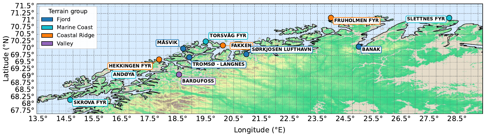
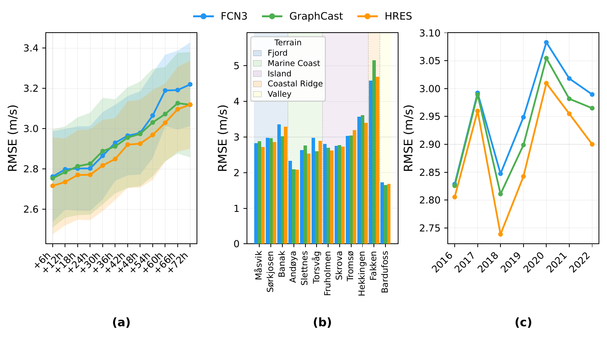
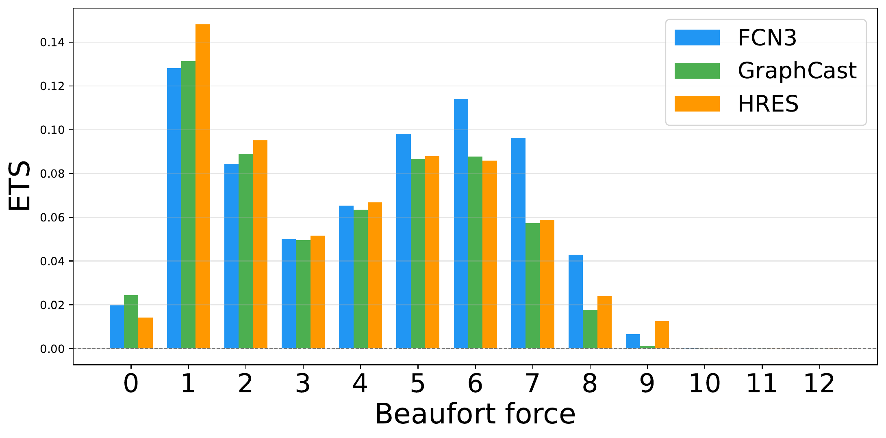
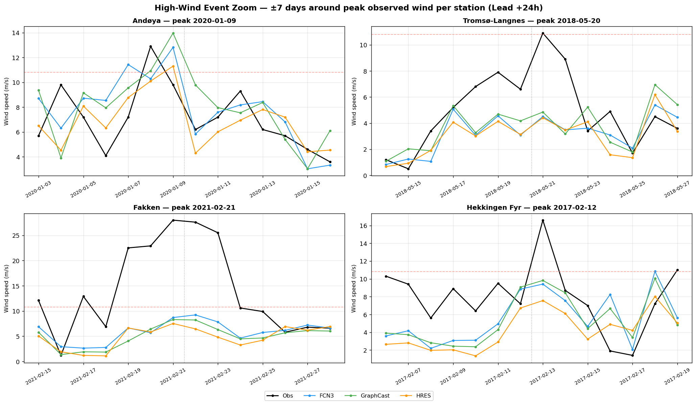

Setup
FCN3 and GraphCast are run through Earth2Studio with pretrained weights, initialised from ERA5. HRES forecasts come from the WeatherBench2 archive. Gridded 10 m wind speed is bilinearly interpolated to each station. The years 2010–2017 fall inside the models' training periods and 2018–2022 fall after them, which lets us test whether skill drops on years the models never saw.

Key findings
1. Overall skill: HRES is slightly ahead, and all three are close
Averaged over all stations, lead times and years, HRES has the lowest RMSE. FCN3 is 0.073 m/s worse than HRES, and GraphCast sits between the two. These gaps are small next to an RMSE of about 2.7–3.2 m/s. The ranking holds under temporal block bootstraps with block lengths of 1–14 days.

2. High winds: FCN3 has the lowest error, but every model underpredicts
This analysis keeps only events with observed wind of at least 10.8 m/s (Beaufort 9 and above): 40,247 records, about 11% of the data. On that subset, FCN3 has a significantly lower RMSE than both GraphCast and HRES. All three systems still underpredict strong winds by about 5 m/s, a known limit of 0.25° global models at exposed coastal sites.
| High-wind subset (obs ≥ 10.8 m/s) | RMSE (m/s) | Bias (m/s) | nBias | ΔRMSE vs FCN3, 95% CI |
|---|---|---|---|---|
| FCN3 | 5.76 | −4.99 | −37.6% | — |
| GraphCast | 6.00 | −5.44 | −40.9% | +0.24 [0.20, 0.29] |
| HRES | 6.05 | −5.51 | −41.6% | +0.28 [0.22, 0.34] |
Values are means over the 12 stations; confidence intervals come from a 7-day temporal block bootstrap with 10,000 resamples.


3. Anomaly correlation depends on the reference
| Mean ACC, +6 h to +72 h | vs station obs | vs ERA5 |
|---|---|---|
| FCN3 | 0.550 | 0.836 |
| GraphCast | 0.565 | 0.861 |
| HRES | 0.565 | 0.824 |
Both AI models were trained on ERA5, so they score well against ERA5. Against independent station observations, the advantage disappears. ACC uses the WeatherBench2 formula with an independent climatology: station observations from 2023–2025, or WeatherBench2's ERA5 climatology for 1990–2017.
4. No drop in skill after the training period
We compared the training years with the years after training (2018–2022). For both models, the change in RMSE and ACC is not significant. For example, the change in ACC is −0.003 for FCN3 (95% CI [−0.014, 0.009]) and +0.010 for GraphCast (95% CI [−0.002, 0.024]). The result holds when each model's own training cutoff is used.
5. Inference cost
Inference time on a single GPU, averaged over three initialisations for each forecast length:
| Model | 3 days | 5 days | 10 days | 15 days | GPU memory | CPU memory |
|---|---|---|---|---|---|---|
| FCN3 | 95.93 s | 109.39 s | 164.59 s | 219.94 s | 52.66 GB | 65.2 GB |
| GraphCast | 151.43 s | 157.03 s | 199.48 s | 247.05 s | 38.00 GB | 59.1 GB |
Going from a 3-day to a 15-day forecast adds only about 2 minutes, because most of the time is fixed start-up overhead rather than the forecast steps themselves.
Evaluation protocol
- Metrics: RMSE, MAE, bias, nRMSE and nBias (normalised by the mean observation), Pearson correlation, ACC, and ETS by Beaufort category.
- Aggregation: metrics are computed per station and lead time, then averaged with equal weight for each station.
- Significance testing: forecast errors are paired and correlated in space and time, so naive tests would overstate significance. We use two approaches:
- a station-cluster bootstrap (10,000 resamples), plus an exact sign-flip test over all 212 patterns;
- a temporal block bootstrap that resamples calendar days and keeps all stations and lead times together, with sensitivity checks at 1, 3, 7 and 14 days.
- Same samples for every model: high-wind and categorical scores use only times where FCN3, GraphCast, HRES and an observation are all available.
Reproduce
The experiment code lives under experiments/ in a fork of NVIDIA Earth2Studio:
experiments/
├── scripts/
│ ├── nldl-src/ # forecasting, ERA5 streaming, case-study driver, cost benchmark
│ ├── download_wind_obs_northern_norway.py
│ ├── download_era5_6h.py, download_hres_forecast_wb2.py, ...
├── jobs/ # SLURM scripts (FCN3 / GraphCast runs, data downloads)
├── notebooks/ # metrics, significance tests, figures
└── outputs/wind_obs/ # station observations (MET Norway Frost API)- Download ERA5 (6-hourly), the HRES forecasts (WeatherBench2) and the station observations with the scripts in
experiments/scripts/. - Run the forecasts:
sbatch experiments/jobs/run_case_study_fcn3_72h_interp.slurmand..._graphcast_72h_interp.slurm. Each is an array job with one task per year. - Compute the metrics and figures in
experiments/notebooks/model_comparison_analysis_72h_interpolate.ipynb; the significance tests are inrebuttal_significance_tests.ipynb.
Step-by-step instructions are in nldl-src/instruction.md.